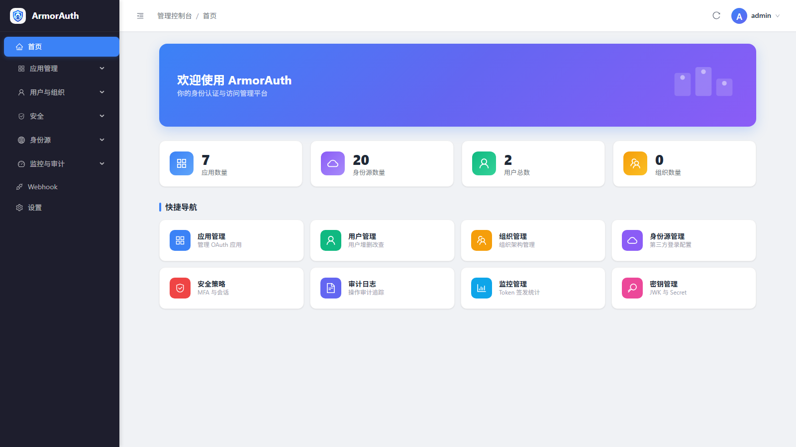

{kind=link}
角色
全局角色适合平台权限，组织角色适合部门、项目或客户侧层级授权。
面向管理员和平台工程团队，按真实运营顺序说明 ArmorAuth 的租户建模、OAuth2/OIDC 应用接入、 用户治理、账号安全、身份源同步和审计运维。
本地或测试环境建议先跑通一条最短链路，再逐步打开多租户、MFA、身份源和 Webhook。

租户用于归集应用、用户、组织和租户感知路径。组织用于承载部门、业务单元或客户侧层级，不需要授权边界时可以不创建。
/t/{tenantCode} 路径变化。
应用代表 OAuth2/OIDC Client。创建时先选择所属租户，再确定授权类型、认证方式、Scope、回调地址和安全策略。
| 应用类型 | 推荐授权类型 | 认证方式 | 配置重点 |
|---|---|---|---|
| 服务端 Web / BFF | authorization_code + refresh_token |
client_secret_basic 或 private_key_jwt |
固定 redirect URI、post logout URI、最小 Scope、应用级 MFA。 |
| SPA / 移动端 | authorization_code + PKCE |
公共客户端，不保存 secret | 必须发送 PKCE，限制回调地址，避免隐式授权流程。 |
| 服务间调用 | client_credentials |
Client Secret 或私钥 JWT | 只开放服务所需 Scope，凭据通过密钥系统托管。 |
| 设备输入 | Device Authorization Grant | 按设备端能力选择 | 设备端请求 device code，用户在激活页输入 user code。 |

ArmorAuth 对外提供标准 OAuth2/OIDC 端点。业务系统应优先读取 Discovery 文档，避免把环境、租户或路径策略写死在代码里。
| 端点 | 用途 | 接入方 |
|---|---|---|
/.well-known/openid-configuration | 发现 issuer、授权端点、Token 端点、JWKS、userinfo 等元数据。 | 所有 OIDC Client、资源服务器。 |
/oauth2/authorize | 发起授权码流程，展示登录页和授权确认页。 | Web、BFF、SPA、移动端。 |
/oauth2/token | 交换授权码、刷新令牌、客户端凭据或 device code。 | 后端服务、客户端 SDK。 |
/oauth2/jwks | 发布 JWT 验签公钥。 | Resource Server、网关。 |
/oauth2/introspect | 校验不透明 Token 或需要实时状态校验的 Token。 | 高敏资源服务。 |
/oauth2/revoke | 撤销 refresh token 或访问令牌。 | 客户端、账号安全流程。 |
/userinfo | 读取 OIDC 用户信息。 | OIDC Client。 |
/oauth2/device_authorization | 设备端申请 device code 和 user code。 | CLI、电视端、无键盘设备。 |
/oauth2/device_verification, /activate | 用户输入 user code 完成设备授权。 | 最终用户。 |
/consent | 用户确认 Client 请求的 Scope。 | 授权码流程。 |
SPA 和移动端不能安全保存 Client Secret。创建公共客户端后，调用方仍必须在授权请求中发送 PKCE 参数，
仅配置 client-authentication-method: none 不等于已经完成 PKCE。
GET /oauth2/authorize?
response_type=code&
client_id=react-spa-pkce&
redirect_uri=http://localhost:5173/callback&
scope=openid profile email&
code_challenge={base64url_sha256_verifier}&
code_challenge_method=S256issuer-uri，由 Spring Security 自动读取 Discovery 和 JWKS。本地用户可以手动创建，也可以通过 SCIM、LDAP/AD 或联合登录进入系统。邮箱和手机号建议完成验证后再参与登录、找回或 MFA。

ArmorAuth 同时维护用户角色、组织角色、权限动作和 OAuth2 Scope。Scope 用于约束 Client 可访问的 API 范围， 角色和权限用于业务系统做更细粒度的授权判断。
全局角色适合平台权限，组织角色适合部门、项目或客户侧层级授权。
按资源和动作建模，如 application:read、tenant:write。
Client 申请 Token 时的协议级访问范围，应与资源服务器的 API 边界对齐。
ArmorAuth 同时支持平台策略和用户自助账号安全。管理员可以在应用、角色或登录策略层面要求 MFA； 用户登录后可以在账号中心绑定 Authenticator app、Passkey 或维护联系方式。
身份源支持 OAuth2/OIDC、SAML、LDAP/AD 以及内置社交和企业 Provider。启用前应先完成元数据、密钥、 属性映射、登录页展示和账号绑定策略配置。
SCIM 适合由企业 IdP 或 HR 系统统一推送用户和组。接入时要先确认租户、认证方式、用户属性映射和组到角色的映射策略。
| 对象 | 同步内容 | 运营注意 |
|---|---|---|
| Users | 用户名、显示名、邮箱、手机号、启停状态。 | 外部系统禁用用户时，ArmorAuth 应保留审计历史。 |
| Groups | 组名、成员关系、外部 ID。 | 组到角色的映射要显式配置，避免外部组名变更导致越权。 |
| PatchOp | 增量更新成员、联系方式和状态。 | 导入前先在测试租户验证属性映射和冲突处理。 |
生产环境需要持续关注登录、Token、配置变更、身份源、Webhook 和密钥状态。高风险变更应关联操作人、时间和工单。
查看管理操作、登录失败、策略变更、身份源变更和 Webhook 投递结果。
对外投递账号、应用和安全事件，接收方必须校验签名并实现重试幂等。
备份 JWK 表和加密 key，轮换时保留旧 key 到迁移完成。
高级能力应按应用和租户逐步启用。当前文档把基础 OAuth2/OIDC 接入和高级协议能力分开，避免把受控能力误当作默认能力。
适合高安全服务端 Client，重点在 JWKS 注册、key id、签名算法和私钥托管。
放在高级协议能力中跟踪，不写入基础接入路径；启用前需要代码、端到端测试和运维开关共同确认。
适合多租户隔离场景；Client 和资源服务器必须使用对应租户的 issuer 与 discovery 地址。